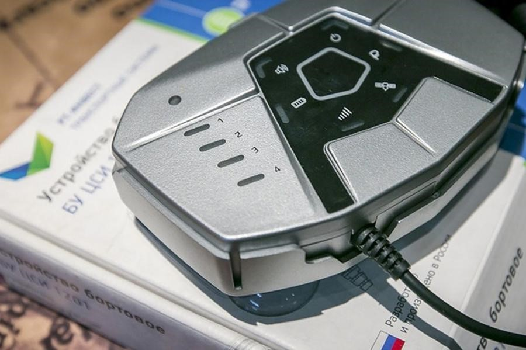
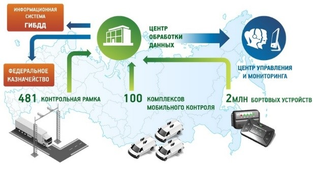

Грузовой автотранспорт играет заметную роль в сфере транспортной логистики в России: около 30% грузов перевозится коммерческими грузовыми автомобилями, автомобильный транспорт принимает участие в более чем 80% логистических цепочках транспортировки продукции. Распространённость грузовиков сказывается на скорости износа дорожного полотна, поэтому во многих странах вводится сбор с водителей грузовиков в счёт возмещения вреда покрытию автомобильных дорог. Для автоматизации в России применяют технологии системы “Платон”, обеспечивающие спутниковый контроль взимания платы с грузовиков.
Российская система взимания платы “Платон” создана для спутникового контроля взимания платы с грузовиков в целях обеспечения соблюдения установленного действующим законодательством порядка взимания платы в счет возмещения вреда, причиняемого дорожному покрытию автомобильных дорог общего пользования федерального значения транспортными средствами, имеющими разрешенную максимальную массу свыше 12 тонн. Система была запущена 15 ноября 2015 года.
Начисление суммы осуществляется в зависимости от фактического пробега автомобиля (при запуске системы из расчета 3,73 ₽/км, 2,34 ₽/км с 1 февраля 2021 года). Фактический пробег рассчитывается либо заранее при оформлении маршрутной карты, либо во время рейса за счёт работы бортового устройства Платон, которое, обеспечивая спутниковый контроль взимания платы с грузовиков, является примером применения технологий спутниковой навигации в транспортной логистике. Определенная часть собранных средств направляется в Дорожный фонд Российской Федерации для приведения федеральных автодорог в надлежащее состояние.
К концу 2013 года на территории РФ были зарегистрированы более 1,7 миллиона грузовых транспортных средств, имеющих разрешённую максимальную массу свыше 12 тонн. Порядка 400 тысяч грузовиков являются транзитными. Причиной введения дополнительного сбора, реализуемого с помощью технологий системы “Платон”, стало то, что денежные средства от текущих налогов были недостаточными для того, чтобы поддерживать дорожную инфраструктуру в хорошем состоянии, пригодном для эксплуатации.
Внедрению системы предшествовали ставшие базой технологий системы Платон научные и прикладные разработки ученых корпорации Ростех, ОАО НИИ «Приборостроения им. В.В. Тихомирова», а также ученых Министерства транспорта Российской Федерации.
Система «Платон», реализующая спутниковый контроль взимания платы с грузовиков, применяет единый тип бортовых устройств – BU 1201. Внутри бортового устройства находится коммуникационный модуль GSM / GPRS и навигационный модуль ГЛОНАСС / GPS, предусмотренный для максимально точной передачи данных о местонахождении транспортных средств при работе бортового устройства Платон.

Системный оператор – компания «РТ-Инвест Транспортные системы» (РТИТС), акции которой в равном соотношении принадлежат Игорю Ротенбергу и государственной корпорации РОСТЕХ.
За услуги спутникового контроля взимания платы с грузовиков, реализуемого с помощью технологий системы „Платон“ оператор системы получает 10,6 млрд рублей в год, направленных из федерального бюджета. В свою очередь доход государственного бюджета от внедрения данной системы достигает 40 миллиардов рублей в год.
Расчёт оплаты происходит благодаря тому, что технологии системы «Платон» обеспечивают сбор, обработку, хранение и передачу в автоматическом режиме данных о движении транспортного средства, имеющего разрешенную максимальную массу свыше 12 тонн. Система распространяется на все автомобильные дороги общего пользования федерального значения, то есть на 50 774 км Федеральных дорог.
С помощью работы бортовых устройств Платон, обеспечивающих приём сигналов глобальных навигационных спутниковых систем ГЛОНАСС и GPS, осуществляется позиционирование транспортных средств с разрешенной максимальной массой свыше 12 тонн, мониторинг движения и идентификация таких автомобилей.
Системы контроля обеспечивают проверку регистрации в реестре системы “Платон” и внесение платы в счет возмещения вреда.

Для получения бортового устройства владельцу транспортного средства необходимо заключить с оператором системы взимания платы “Платон” договор безвозмездного пользования, предоставив необходимый пакет документов.
После установки и начала работы бортового устройства Платон при выезде на федеральную автомобильную дорогу с помощью навигационных систем ГЛОНАСС/GPS определяются географические координаты движущегося автомобиля и с заданной периодичностью через сети сотового оператора отправляются в Центр обработки данных.
В Центре обработки данных на основании данной информации, собранной за сутки, в автоматическом режиме рассчитывается размер платы. Во время движения автомобиля денежные средства списываются с расчётной записи Владельца транспортного средства автоматически. При длительной остановке работа бортового устройства Платон автоматически переходит в «спящий режим».
В случае если автомобиль не проезжает по федеральной автомобильной дороге либо маршрут проходит по платной федеральной автодороге, Система не включает данные участки пути в расчет платы.
При запуске программы возникло множество проблем. Информирование пользователей проводилось слабо, что привело к несвоевременным платежам в первые недели работы и соответственно штрафам. Помимо этого, обеспечение пользователей бортовыми устройствами было затруднено.
Стоимость товаров находится в прямой зависимости от затрат на их доставку, соответственно, сбор, осуществляемый с помощью технологий системы “Платон”, увеличивает стоимость продукции, так как растут издержки на транспорт.
Увеличение расходов на транспортировку также оказывает влияние и на производителей. При падении объемов продаж, сделки могут стать убыточными, что впоследствии может привезти к остановке производства. В конечном итоге такой сложный в администрировании налог отразится на потребителе, поскольку цены на товары неизбежно вырастут.
Система действует с 2015 года, но некоторые проблемы до сих пор не решены и возникают новые. В феврале 2020 года перевозчики столкнулись с тем, что срок работы бортового устройства Платон истек, а предоставить новые оператор системы не готов.
Для того чтобы нормализовать ситуацию на рынке транспортных услуг, в первую очередь необходимо устранить все сбои в системе спутникового контроля взимания платы с грузовиков, чтобы её использование стало целесообразным и не создавало трудностей для перевозчиков и поставщиков.
Постановлением Правительства Российской Федерации от 14.06.2013 г. № 504 «О взимании платы в счет возмещения вреда, причиняемого автомобильным дорогам общего пользования федерального значения транспортными средствами, имеющими разрешенную максимальную массу свыше 12 тонн», (в ред. Постановления Правительства РФ от 29.06.2019 № 843) с 1 февраля 2021 года установлен размер платы 2,34 руб. за один километр.
Все собранные денежные средства Оператор системы взимания платы “Платон” ежедневно перечисляет в доход Федерального бюджета. С учетом действия льготного тарифа первые собранные с помощью технологий системы „Платон“ средства по итогам 2016 года Правительство РФ направило на ремонт 1000 км дорог в 40 городах и регионах, а также на софинансирование строительства и реконструкции 31 моста в 19 субъектах РФ.
В соответствии с Федеральным законом от 08.11.2007 г. № 257-ФЗ «Об автомобильных дорогах и дорожной деятельности в Российской Федерации» от платы в счет возмещения вреда, причиняемого автомобильным дорогам общего пользования федерального значения транспортными средствами, имеющими разрешенную максимальную массу свыше 12 тонн, освобождаются:
Источники:
1)О СИСТЕМЕ ВЗИМАНИЯ ПЛАТЫ
2)Постановление Правительства Российской Федерации от 29.06.2019 № 843 "О внесении изменения в постановление Правительства Российской Федерации от 3 ноября 2015 г. № 1191"
3)Постановление Правительства Российской Федерации от 14.06.2013 г. № 504 “О взимании платы в счет возмещения вреда, причиняемого автомобильным дорогам общего пользования федерального значения транспортными средствами, имеющими разрешенную максимальную массу свыше 12 тонн”
4)Федеральный закон от 08.11.2007 г. № 257-ФЗ «Об автомобильных дорогах и дорожной деятельности в Российской Федерации»
5)Буянова К.А., Роль системы взимания платы “Платон” в логистике — E-Scio, 2020